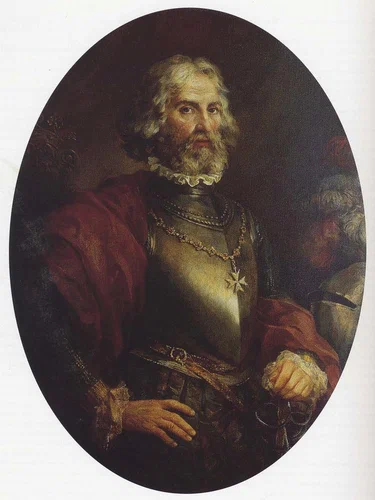

Несмотря на стойкость и грамотную оборону родосских рыцарей их силы не были бесконечны. После тяжелых боев в начале октября ряды защитников сильно поредели. Да и оборонительные сооружения находились не в лучшем состоянии. Стена в секторе обороны испанского ланга имела несколько проломов в результате взрывов заложенных турками мин. Жак де Бурбон пишет: «Это было начало нашей гибели» (‘commencement de nostre perdition ‘ , Oppugnation, 1527, f. 21) Проломы заняли турки и вытеснить их оттуда уже не было сил. Поэтому в районе проломов были срочно возведены внутренние стены, чтобы на допустить османов внутрь крепости. Позиционные бои шли день за днем без передышки. Все это время (34 дня, как замечает де Бурбон) среди защитников вновь возведенной стены находился великий магистр де л’Иль-Адам.

Серьезной проблемой в это время стал дефицит пороха. Это удивительно, так как созданные запасы предполагали нахождение в осаде до 12 месяцев. Загадка выяснилась только спустя более чем триста лет. От удара молнии в 1856 году загорелась церковь св. Иоанна поблизости от Дворца магистра. В результате пожара раздался мощнейший взрыв, уничтоживший все строения в окрестности церкви. Расследование показало, что в церковных подвалах были замурованы большие запасы пороха. Кто совершил это действие, лишив рыцарей доступа к так необходимому им пороху, не ясно до сих пор. Очевидно, что это стало результатом предательства, но конкретный виновник не установлен. Некоторые исследователи пытались связать этот факт с предательством канцлера ордена португальца Андре до Амарала. Однако, на наш взгляд, измена Амарала сама по себе не была доказана. Его арестовали на основе письма к туркам с требованием продолжать осаду, найденного у его слуги. Сразу же вспомнили высказывание Амарала после выборов Великого магистра, которые он проиграл де л’Иль-Адаму. Амарал, якобы, сказал, что де л’Иль-Адам будет последним магистром на Родосе. Однако признаний в измене у Амарала не удалось вырвать даже под пытками. Он был казнен как предатель, но поверить в его измену трудно. Да, это был высокомерный и заносчивый человек, не пользовавшийся популярностью у рыцарей, так что его легко было обвинять. Но предательство человека такого высокого ранга обязательно оставило бы следы в турецких источниках. Однако ничего компрометирующего Амарала там не найдено. Нельзя отнести к его злодеяниям и сокрытие запасов пороха. По крайней мере, этот факт среди предъявленных ему обвинений не значится. (H.J.A. Sire “The knights of Malta”, p.58)
К концу октября брешь в стене была расширена настолько, что «тридцать или сорок всадников могли проехать через нее одной шеренгой» (Kenneth M. Setton, The. Papacy and the Levant. (1204-1571). Vol. IV, p. 209). 14 ноября туркам удалось преодолеть вновь возведенную стену в секторе испанского ланга и они оказались в черте города. Начались уличные бои. Сил у рыцарей явно не хватало. В этот момент решающую роль сыграл флот.
Турецкий флот, осуществлявший блокаду острова, потерял своих опытных командиров. После неудачи в генеральном штурме 24 сентября султан снял командующего флотом за неумелые действия по поддержке сухопутных сил в ходе штурма, а также устроил публичную порку самому опытному своему адмиралу Куртоглу, о чем мы уже рассказывали выше. 14 ноября нескольким бригантенам иоаннитов с продовольствием и боеприпасами удалось прорвать турецкую блокаду, а на следующий день в гавань Родоса успешно прорвались два более крупных корабля с подкреплением: две дюжины воинов, половина из которых была рыцарями ордена. Пополнения по два-три человека за один раз прибывали и раньше, но в данном случае масштаб был несомненно крупнее. И все же эти свежие силы не могли склонить чашу весов в пользу госпитальеров. Потеря каждого бойца на стенах города вызывала серьезную обеспокоенность великого магистра, тогда как у султана беспокойство вызвали лишь десяток-другой потерянных воинов; тем более, что среди них, кроме турок, было много боснийцев, болгар, греков, жителей Валахии и других покоренных османами мест. И несмотря на тяжелые потери, Сулейман не мог уйти с Родоса: глаза из всех европейских стран следили за его кампанией на острове и бесславный уход означал для султана потерю его престижа, более того, потерю лица. Чтобы показать непреклонность в продолжении осады, султан приказал заменить свой шатер капитальной резиденцией, построенной из камня. Он направил гонцов в Сирию и Месопотамию с приказом направить на Родос всех янычар из находящихся там гарнизонов. В последний день ноября был предпринят еще один генеральный штурм с направлением главного удара на бастионы испанского и итальянского лангов. Это было самое масштабное наступление после штурма 24 сентября, но и на этот раз турки были отбиты и отошли, оставив 3000 убитых. Моральный дух турецких войск упал до самого низкого за всю кампанию уровня. Поднять их в очередную атаку можно было лишь ударами палок. Начались зимние холода. Саперы уже почти не могли работать своими отмороженными пальцами. Сохранялась вероятность прибытия помощи родосским рыцарям из стран Западной Европы. Сулейман искал любой повод, чтобы добиться ухода рыцарей с острова без дальнейшего пролития крови. Большие надежды он связывал с тем, что и положение осажденных становилось критическим. Из донесений лазутчиков и дезертиров складывалось впечатление, что родосские рыцари уйдут с острова, если им предоставить почетные условия для сдачи крепости.
10 декабря защитники Родоса были поражены, увидев белый флаг над резиденцией турецкого султана. Он мог означать только одно: Сулейман предлагает переговоры. Такой же флаг был поднят и над крепостью. Вскоре к осажденным прибыли два турецких эмиссара с письмом от Сулеймана, предлагавшего личную встречу с Великим магистром.
Окончание последует.